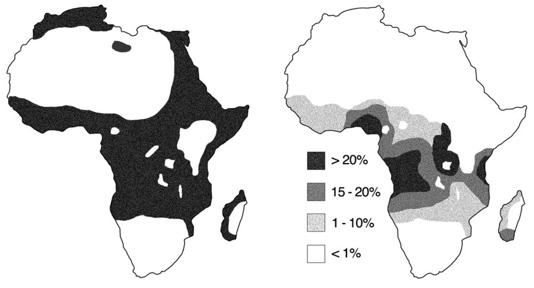

Información divulgativa. No sustituye la valoración de un profesional sanitario ni el consejo genético.
En pocas palabras
| Genes | HBB (cadena beta, cromosoma 11); HBA1 y HBA2 (cadena alfa, cromosoma 16) |
| Herencia | Autosómica recesiva |
| Frecuencia mundial | Más de 300.000 nacimientos al año con anemia falciforme y decenas de miles con talasemia grave |
| En España | Anemia falciforme en la prueba del talón; talasemias frecuentes en portadores |
| Tratamientos | Hidroxiurea, transfusiones, trasplante, terapia génica y edición con CRISPR |


La hemoglobina
La hemoglobina es la proteína de los glóbulos rojos que transporta el oxígeno de los pulmones a los tejidos. En los adultos está formada sobre todo por dos cadenas alfa y dos cadenas beta (hemoglobina A). Antes de nacer, el feto fabrica otra forma, la hemoglobina fetal, con cadenas gamma en lugar de beta, que capta mejor el oxígeno de la placenta. Tras el nacimiento, un "interruptor" genético apaga la fetal y enciende la adulta.
Las variantes en los genes de esas cadenas causan las hemoglobinopatías. Hay dos grandes grupos:
- Las variantes estructurales, en las que la hemoglobina se fabrica con un aminoácido cambiado. La más importante es la hemoglobina S, de la anemia falciforme.
- Las talasemias, en las que se fabrica poca cantidad de una de las cadenas.
Anemia falciforme
La causa
Se debe a un cambio de una sola letra en el gen HBB: una adenina sustituida por una timina, que cambia el ácido glutámico de la posición 6 de la cadena beta por una valina. Fue la primera enfermedad explicada a nivel molecular, por Linus Pauling en 1949 y Vernon Ingram en 1957.
La hemoglobina alterada (HbS) se agrupa en fibras rígidas cuando hay poco oxígeno y deforma los glóbulos rojos en forma de hoz (falx, en latín). Esos glóbulos rígidos y pegajosos:
- se rompen antes de tiempo (viven unos 10-20 días en lugar de 120)1, causando anemia crónica;
- obstruyen los vasos pequeños, lo que produce crisis de dolor muy intensas y daño en casi cualquier órgano.
Síntomas y complicaciones
Los síntomas empiezan hacia los 6 meses de vida, cuando la hemoglobina fetal desaparece:
- Crisis vasooclusivas: dolor intenso en huesos, tórax o abdomen, a menudo desencadenado por frío, deshidratación, infecciones o estrés. En los bebés, hinchazón dolorosa de manos y pies.
- Infecciones graves, porque el bazo se daña en los primeros años y deja de funcionar.
- Síndrome torácico agudo, una complicación pulmonar que puede ser mortal.
- Ictus, incluso en la infancia.
- Daño crónico en riñones, ojos, huesos (necrosis de la cadera), corazón y pulmones; úlceras en las piernas; priapismo.
Es una enfermedad que acorta la vida: en los países de bajos ingresos, la mayoría de los niños afectados muere antes de los 5 años sin diagnóstico ni tratamiento.
Herencia y frecuencia
Es autosómica recesiva. Las personas con una sola copia de HbS tienen el rasgo falciforme: suelen estar sanas, aunque en condiciones extremas, como deshidratación grave o gran altitud, pueden tener complicaciones.
Cada año nacen en el mundo más de 300.000 niños3,7 con anemia falciforme, la mayoría en el África subsahariana, la India y Oriente Medio. Con las migraciones, es cada vez más frecuente en Europa: en España se incluye en la prueba del talón en todas las comunidades.
La relación con la malaria
¿Por qué una variante tan dañina es tan frecuente? Porque las personas portadoras están protegidas frente a la malaria grave6. En las regiones donde la malaria ha sido frecuente durante miles de años, los portadores sobrevivían más y tenían más hijos, y la variante se mantuvo con frecuencias de hasta el 20-30 %. Lo propuso el médico Anthony Allison en 1954 y es uno de los ejemplos más claros de selección natural en humanos. Algo parecido ocurre con las talasemias.


Talasemias
En las talasemias se fabrica poca cantidad de cadenas alfa (alfa-talasemia) o beta (beta-talasemia). Los glóbulos rojos son pequeños y pálidos, y la médula intenta compensar fabricando más. Son frecuentes en el Mediterráneo (el nombre viene del griego thalassa, mar), Oriente Medio, la India y el sudeste asiático. En España, entre un 0,5 y un 2 % de la población es portadora de beta-talasemia, según la zona.
Hay distintos grados:
- Portador (rasgo talasémico o talasemia menor): anemia leve o ninguna, glóbulos rojos pequeños. Es muy frecuente y se confunde a menudo con falta de hierro. No necesita tratamiento, y tomar hierro sin tenerlo bajo puede ser perjudicial. Es importante saberlo antes de un embarazo, por si la pareja también es portadora.
- Talasemia intermedia o no dependiente de transfusiones: anemia moderada.
- Talasemia mayor (beta-talasemia grave o anemia de Cooley): anemia grave desde el primer año de vida, que necesita transfusiones cada 2-4 semanas2 de por vida. Las transfusiones acumulan hierro en el corazón, el hígado y las glándulas, por lo que se necesitan quelantes del hierro.
- En la alfa-talasemia, la forma más grave (ausencia de los cuatro genes alfa) suele ser incompatible con la vida antes de nacer.
Diagnóstico
- Cribado neonatal de anemia falciforme.
- Hemograma: glóbulos rojos pequeños (VCM bajo) con hierro normal orientan a talasemia.
- Electroforesis o cromatografía de hemoglobinas: identifica la HbS y mide las fracciones HbA2 y fetal, elevadas en la beta-talasemia.
- Estudio genético: confirma el tipo, imprescindible en la alfa-talasemia, y permite el diagnóstico prenatal o preimplantacional.
- Cribado de portadores en parejas de origen mediterráneo, africano o asiático que planean un embarazo.
Tratamiento
Anemia falciforme
- Prevención de infecciones: penicilina diaria en la infancia y vacunas.
- Hidroxiurea: aumenta la hemoglobina fetal1, que impide que la HbS forme fibras. Reduce las crisis de dolor, el síndrome torácico agudo, las transfusiones y la mortalidad. Es el tratamiento de base desde los 9 meses de edad.
- Ecografía Doppler transcraneal anual entre los 2 y los 16 años para detectar el riesgo de ictus, y transfusiones periódicas si es alto.
- Tratamiento del dolor rápido y adecuado en las crisis.
- Trasplante de médula ósea de un hermano compatible: puede curar, sobre todo en niños.
Talasemia mayor
- Transfusiones regulares y quelación del hierro (deferoxamina, deferasirox, deferiprona).
- Luspatercept: un fármaco que mejora la maduración de los glóbulos rojos y reduce la necesidad de transfusiones en adultos.
- Trasplante de médula ósea de un donante compatible.
Terapia génica y edición genética
Las hemoglobinopatías han sido pioneras de la medicina genética:
- Exagamglogén autotemcel (Casgevy), aprobado en el Reino Unido en noviembre de 2023, en EE. UU. en diciembre de 2023 y en la Unión Europea a principios de 20244,5, es el primer medicamento basado en CRISPR. Se extraen células madre de la sangre del paciente, se edita con CRISPR un "interruptor" del gen BCL11A para volver a encender la hemoglobina fetal y se reinfunden. En los ensayos, más del 90 % de los pacientes con anemia falciforme quedó libre de crisis graves durante al menos un año, y la gran mayoría de los pacientes con talasemia dejó de necesitar transfusiones.
- Terapias génicas con lentivirus, que añaden un gen de hemoglobina funcional a las células madre.
Son tratamientos complejos: exigen quimioterapia previa para vaciar la médula, con efectos sobre la fertilidad, ingresos largos y un precio de millones de euros por paciente. El gran reto es que lleguen a los países donde la enfermedad es más frecuente.
Qué preguntar en consulta
Preguntas que puedes llevar apuntadas. No todas tendrán respuesta el primer día, y tu equipo puede añadir otras.
- ¿Qué forma tengo exactamente: anemia falciforme, beta-talasemia mayor o intermedia, o rasgo?
- ¿Necesito hidroxiurea, transfusiones o quelación del hierro?
- ¿Soy candidato a trasplante de médula o a terapia génica, como la edición con CRISPR?
- ¿Qué vacunas y qué medidas me protegen de las infecciones y de las crisis de dolor?
- ¿Debería estudiarse mi pareja antes de un embarazo?
Dónde informarse
Ver también: CRISPR explicado, Terapia génica y Linus Pauling.
Fuentes
- Kato GJ, Piel FB, Reid CD, et al. Sickle cell disease. Nat Rev Dis Primers. 2018;4:18010. doi:10.1038/nrdp.2018.10
- Kattamis A, Kwiatkowski JL, Aydinok Y. Thalassaemia. Lancet. 2022;399(10343):2310-2324. doi:10.1016/S0140-6736(22)00536-0
- Piel FB, Patil AP, Howes RE, et al. Global epidemiology of sickle haemoglobin in neonates: a contemporary geostatistical model-based map and population estimates. Lancet. 2013;381(9861):142-151. doi:10.1016/S0140-6736(12)61229-X
- Frangoul H, Locatelli F, Sharma A, et al. Exagamglogene autotemcel for severe sickle cell disease. N Engl J Med. 2024;390(18):1649-1662. doi:10.1056/NEJMoa2309676
- Locatelli F, Lang P, Wall D, et al. Exagamglogene autotemcel for transfusion-dependent β-thalassemia. N Engl J Med. 2024;390(18):1663-1676. doi:10.1056/NEJMoa2309673
- Allison AC. Protection afforded by sickle-cell trait against subtertian malarial infection. Br Med J. 1954;1(4857):290-294. doi:10.1136/bmj.1.4857.290
- GBD 2021 Sickle Cell Disease Collaborators. Global, regional, and national prevalence and mortality burden of sickle cell disease, 2000-2021. Lancet Haematol. 2023;10(8):e585-e599. doi:10.1016/S2352-3026(23)00118-7